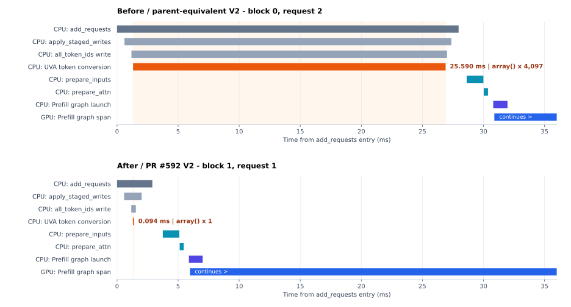

PR #592 / TRACE EVIDENCE / 2026-11-07
UVA token conversion: 4,097 materializations become 1
BEFORE: median traced UVA slice25.606 ms
AFTER: median traced UVA slice0.095 ms
array() calls per B=4 request batch4,097 → 1

| Nested CPU span | Before: median [min, max] | After: median [min, max] |
|---|---|---|
| Prefill add_requests | 27.989 ms [27.673, 29.254] | 2.898 ms [2.874, 2.983] |
| RequestState.apply_staged_writes | 26.778 ms [26.606, 28.013] | 1.444 ms [1.433, 1.489] |
| StagedWriteTensor.all_token_ids | 25.856 ms [25.719, 26.876] | 0.376 ms [0.373, 0.385] |
| UVA token conversion | 25.606 ms [25.469, 26.559] | 0.095 ms [0.092, 0.098] |
The 0-36 ms time axis is identical in both panels. The after slice is <0.1 ms and therefore very narrow.
Nested durations overlap: do not sum these rows. Trace slices include profiler and instrumentation overhead.
Nested durations overlap: do not sum these rows. Trace slices include profiler and instrumentation overhead.
Paired collection: before / after / after / before; 10 warmups + 3 traced requests per block. Six samples per variant.
Representative request: nearest to each variant's median UVA slice duration. All outputs exact; FULL graph checks passed.